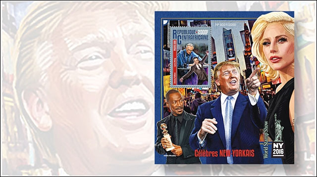
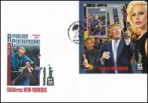
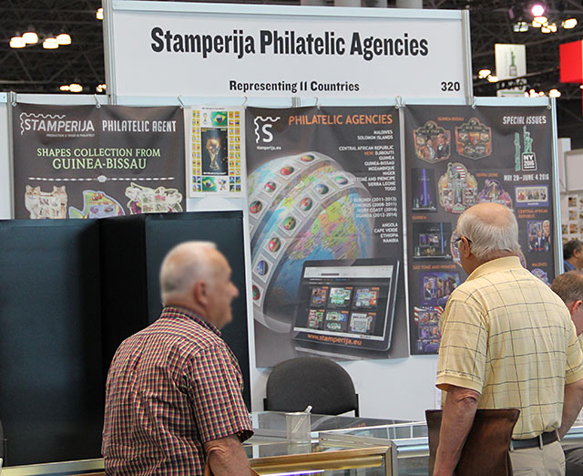
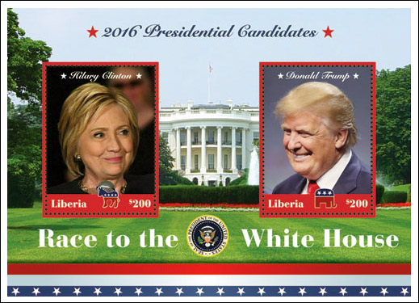
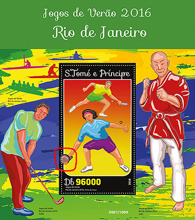

|
|
LINN'S ADVERTISING FOR ABUSIVE ISSUES AND FOR THEIR ISSUER
AT THE WORLD STAMPS SHOW - NY 2016
Victor Manta, PWO
Abusive issues are those that were defined as such by the Fight Against Fakes and Forgeries Commission of the International Philatelic Federation (FIP).
- Prohibited issues are those that do not comply with the Code of philatelic ethics, accepted by the member countries of the Universal Postal Union (UPU), as well as with the decision of the FIP from 1976.
- This code was introduced in 2008 and was approved by all member countries of the UPU. Some stamps and sheets do not comply with this code are however issued legally by some postal administrations and they have a legal franking power!- They are not sold by the national philatelic services but by agencies or private companies often located outside the country.
- They do not correspond to the internal needs of the country for postal traffic and are often not even on sale in the issuing countries! SourceIn the past we have denounced on this site the complicity of major international catalogue publishers, like Scott, Michel and Yvert, who list many of these huge, never ending stamp hyper productions. The last example was that of the little Salomon Island, that issued on average roughly 500 different stamps and 150 different S/S per year, as well in 2013 as in 2014, this accordingly to the Scott catalogue that listed them in 2015! Source
To our surprise, the catalogue publishers were joined by a Linn's philatelic journalist, Denise McCarty, who published the article: Donald Trump makes postal appearance on Central African Republic sheet. Here is a short excerpt from it:

This image was published by Linn'sDonald Trump is among those honored as New York celebrities on a stamp issue from the Central African Republic.
The stamps are being issued to commemorate World Stamp Show-NY 2016, an international stamp exhibition taking place May 28 through June 4 in the Javits Center, 655 W. 34th St., in New York City. At this show, the post office of the Central African Republic is being represented by Stamperija, a postal agency located in Vilnius, Lithuania." Source
In Linn's Stamp News, June 6, 2016, page 22, the same author underlines as follows:
"Stamperija
Several postal administrations represented by Stamperija, a postal agency in Vilnius, Lithuania, also are saluting this international exhibition with New-York-themed stamps."These two articles are nothing short of a massive publicity stunt for the miniature sheet issued by the Central African Republic and for its official agent, Stamperija.

Mr. Trump's large image is missing on the FDC. Was it too large for a cover? More about Stamperija can be found here

Stamperija booth at World Stamp Show - NY 2016When I visited the World Stamps Show - NY 2016, I learned from some knowledgeable visitors that Trump's miniature sheet was high in demand, what is not surprising after such a focused publicity.
Just to notice that by issuing this miniature sheet, as well as by selling it on the US territory, the Central African Republic and its agent mixed up with the political campaign of a sovereign state, what is prohibited by UPU conventions. But nobody appeared to care about it
Some information about the Central African Republic (from the web)
On 18 February 2014, United Nations Secretary-General Ban Ki-moon called on the UN Security Council to immediately deploy 3,000 troops to the country to combat what he described as innocent civilians being deliberately targeted and murdered in large numbers. The secretary-general outlined a six-point plan, including the addition of 3,000 peacekeepers to bolster the 6,000 African Union soldiers and 2,000 French troops already deployed in the country. Source
The Foreign and Commonwealth Office (FCO) advise against all travel to the Central African Republic (CAR). There is no British Embassy in the CAR.
Tensions are high in Bangui and across the country. There are armed patrols that have set up several roadblocks across the country. Reports of violence, reprisal killings, looting and human rights abuses continue across the country.
Since January 2015, there have been a number of kidnappings of government ministers and humanitarian and UN workers. In September 2015 there was a further increase in inter-ethnic violence, particularly in Bangui and Bambari. There is an underlying threat from terrorism.
Situation still current at 21 May 2016 (note: the day I visited the page). Source
The influx of peacekeepers no doubt reduced further bloodshed, but the crisis continued to outpace the response. By the end of 2013, the situation had already reached a turning point: Widespread and systematic mass atrocity crimes, including killings on the basis of religious identity, had become the dominant feature of a rapidly expanding catastrophe. Source
Update. The same subject covered by the competing agency IGPC

Source: Linn's Stamp News, Sept. 2016, p. 21. Linn's describes also two MS's having the same subject and issued by Maldives (by their agent Stamperija, of course) and provides links to both abusives issuing companies.
The Most Hilarious Abusive
The award goes to the Stamperija company that issued recently a "Rio Olympic Games" miniature sheet showing a new, revolutionary method to hold a table tennis bat.

Credits: the Association Française des Collectionneurs du Tennis de Table. Source.
Links to related articles published on this site:
- The Invasion of Prohibited Stamps
- WNS Circulars are not reliable
- WADP, WNS and the Illegal Postal Stamps. Balance Sheet Ten Years Later
- What is WNS Good For?
- No Help from the UPU
- Nigerian Stamp Sentinel
- Ten Lost WNS Years
|
|